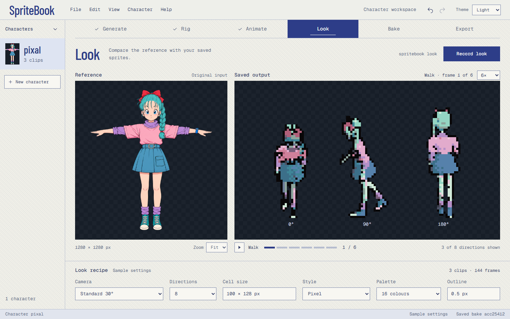
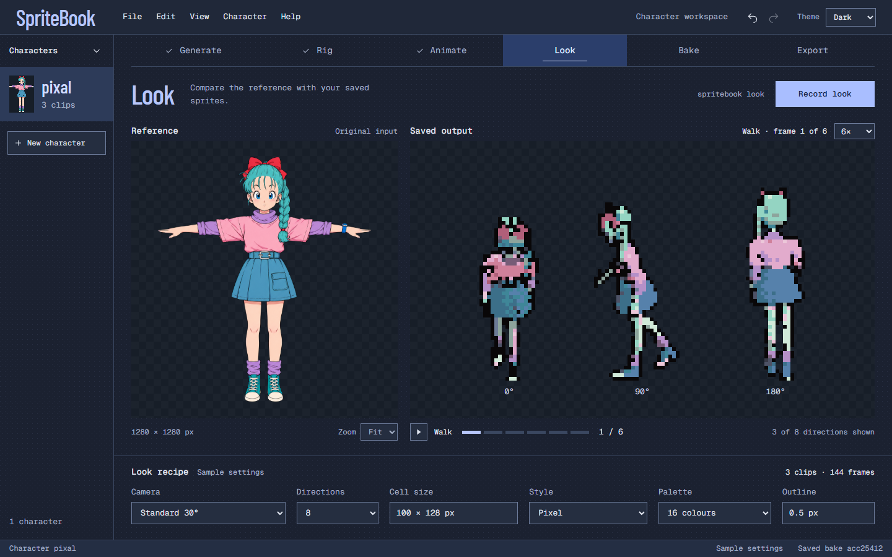

Deeper indigo, a compact title bar and textured surfaces. The dark theme has its own surfaces, contrast and accent balance.


1440 × 900 concept · use 100% to judge texture and pixels at native scale.
#2D3D88#1B213036px wordmark · 56px title bar. The decorative ASCII motif is removed. More of the window belongs to the artwork.
The saved-output well is pixel-identical in both themes. Preview backgrounds stay dark; shell textures stay outside them.
Concepts only. App implementation and publishing remain pending.